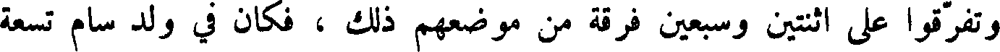
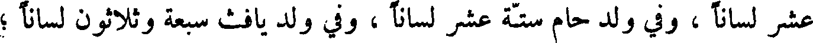
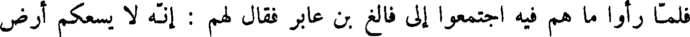
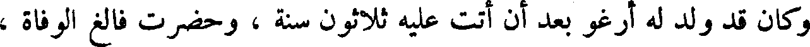
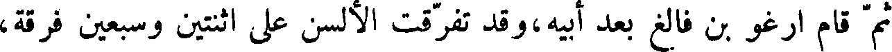
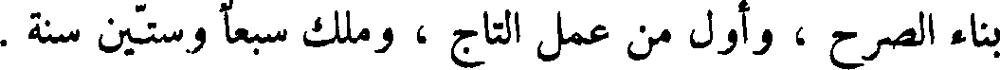
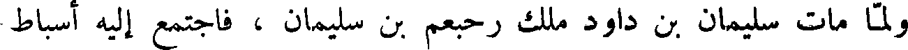
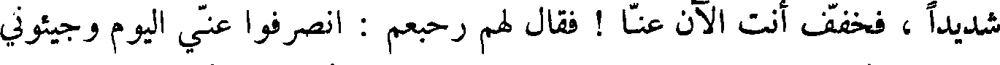

File: 000150.gt.txt (if the image is defective, simply delete all Arabic text and the line will be excluded)
جلود الوحوش ، ولا يقص شعرا ولا ظفرا ، وليجلس وحده ، وليكثر حمد الله ،
File: 000151.gt.txt (if the image is defective, simply delete all Arabic text and the line will be excluded)
ثم مات في أيار يوم الأربعاء ، وكانت حياته تسعمائة سنة وخمسين ، كما حكى الله
File: 000152.gt.txt (if the image is defective, simply delete all Arabic text and the line will be excluded)
تعالى ألف سنة إلا خمسين عاما .
File: 000153.gt.txt (if the image is defective, simply delete all Arabic text and the line will be excluded)

وتفرقوا على اثنتين وسبعين فرقة من موضعهم ذلك ، فكان في ولد سام تسع
File: 000154.gt.txt (if the image is defective, simply delete all Arabic text and the line will be excluded)

عشر لسانا ، وفي ولود حام ست عشرة لسانا ، وفي ولد يافث سبعة وثلاثون لسانا ؛
File: 000155.gt.txt (if the image is defective, simply delete all Arabic text and the line will be excluded)

فلما رأوا ما هم فيه اجتمعوا إلى فالغ بن عابر فقال لهم : انه لا يسعكم أرض
File: 000156.gt.txt (if the image is defective, simply delete all Arabic text and the line will be excluded)
واحدة مع افتراق ألسنتكم ، فقالوا : اقسموا الأرض بيننا ، فقسم لهم فصار
File: 000157.gt.txt (if the image is defective, simply delete all Arabic text and the line will be excluded)
لولد يافث بن نوح الصين والهند والسند والترك والخزر والتبت والبلغر والديلم
File: 000158.gt.txt (if the image is defective, simply delete all Arabic text and the line will be excluded)
وما والى ارض خرا سان ، وكان ملك بني يافث في ذلك الزمان جم شاذ .
File: 000159.gt.txt (if the image is defective, simply delete all Arabic text and the line will be excluded)
وصار لولد حام أرض المغرب وما وراء الفرات إلى مسقط الشمس .
File: 000160.gt.txt (if the image is defective, simply delete all Arabic text and the line will be excluded)
وصار لولد سام الحجاز واليمن وباقي الأرض .
File: 000161.gt.txt (if the image is defective, simply delete all Arabic text and the line will be excluded)

وكان قد ولد له ارغو بعد أن أتت عليه ثلاثون سنة ، وحضرت فالغ الوفاة ،
File: 000162.gt.txt (if the image is defective, simply delete all Arabic text and the line will be excluded)
فأوصى إلى ابنه ارغو ، ومات فالغ يوم الجمعة لاثنتي عشرة ليلة خلت من أيلول ،
File: 000163.gt.txt (if the image is defective, simply delete all Arabic text and the line will be excluded)
وكانت حياته مائتي سنة وتسعا وثلاثين سنة .
File: 000164.gt.txt (if the image is defective, simply delete all Arabic text and the line will be excluded)
ارغو بن فالغ
File: 000165.gt.txt (if the image is defective, simply delete all Arabic text and the line will be excluded)

ثم قال ارغو بن فالغ بعد أبيه ، وقد تفرقت الألسن على اثنتين وسبعين فرقة ،
File: 000166.gt.txt (if the image is defective, simply delete all Arabic text and the line will be excluded)
لبني سام تسعة عشرة فرقة ، ولود حام ست عشرة فرقة ، ولولد يافث سبع
File: 000167.gt.txt (if the image is defective, simply delete all Arabic text and the line will be excluded)
وثلاثون ، وكان في زمانه نمرود الجبار ، وكان مسكنه ببابل ، وكان الذي ابتدأ
File: 000168.gt.txt (if the image is defective, simply delete all Arabic text and the line will be excluded)

بناء الصرح ، وأول من عمل التاج ، وملك سبعا وستين سنة .
File: 000169.gt.txt (if the image is defective, simply delete all Arabic text and the line will be excluded)
وكان قد ولد لارغو ساروغ ، بعد أن أتت عليه اثنتان وثلاثون سنة ، ولما
File: 000170.gt.txt (if the image is defective, simply delete all Arabic text and the line will be excluded)
أتت لأرغو أربع وسبعون سنة من عمره كمل الألف الثالث .
File: 000171.gt.txt (if the image is defective, simply delete all Arabic text and the line will be excluded)
وحضرت أرغو الوفاة ، فأوصى ابنه ساروغ ، وتوفي أرغو يوم الأربعاء
File: 000172.gt.txt (if the image is defective, simply delete all Arabic text and the line will be excluded)
لأربع عشرة ليلة خلت من نيسان ، وكانت حياته مائتي سنة .
File: 000173.gt.txt (if the image is defective, simply delete all Arabic text and the line will be excluded)
رحبعم بن سليمان والملوك بعده
File: 000174.gt.txt (if the image is defective, simply delete all Arabic text and the line will be excluded)

ولما مات سليمان بن داود ملك رحبعم بن سليمان ، فاجتمع إليه أسباط
File: 000175.gt.txt (if the image is defective, simply delete all Arabic text and the line will be excluded)
بني إسرائيل ، وقالوا له : إن أباك قد كان غلظ علينا ، واستعبدنا استعبادا
File: 000176.gt.txt (if the image is defective, simply delete all Arabic text and the line will be excluded)

شديدا ، فخفف أنت الآن عنا ! فقال لهم رحبعم : انصرفوا عني اليوم وجيئوني
File: 000177.gt.txt (if the image is defective, simply delete all Arabic text and the line will be excluded)
بعد ثلاثة أيام ، فانصرفوا عنه ،فاستشار المشيخة من أصحاب أبيه ، فقال : ما
File: 000178.gt.txt (if the image is defective, simply delete all Arabic text and the line will be excluded)
فقالوا له : نرى أن تغلظ القول لهم ليستقيم لك أمرهم ، كما استقام لأبيك .
File: 000179.gt.txt (if the image is defective, simply delete all Arabic text and the line will be excluded)
فلما كان اليوم الثالث اجتمعوا إليه ليسألوه عما ذكروا له ، فقال لهم :
To Save: `Ctrl+s`, make sure to choose `Webpage, complete`!